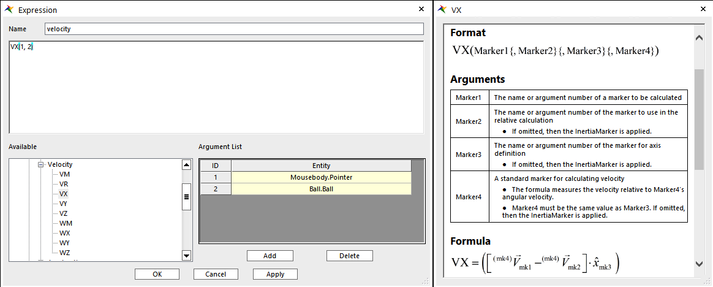

RecurDyn Co-simulation with SIMULINK
Latest things always(?) brings compatibility issues.
Table of Contents
- Environment
- Start with existing examples
- Set Input and Output
- MATLAB Side
- Plot Viewing
- Problem Caused by Version Changes
I can’t remember what problem I ran into concerning the compatibility. Maybe it’s the OpenOCD debugging, but that’s the opposite case.
Since that I cannot get access to a copy of solidworks file, and my teammate used RecurDyn, so I’ll do the same. The other attempts seems meaningless without accurate simulations. If I cannot get this done this week, I think I’ll obtain a proper reason to give up.
Environment
System : Win 11
RecurDyn: R9V5
MATLAB: 2023a
Start with existing examples
The main tutorial was followed by official tutorial video(sort of).
At the first glance, this is quite new to me. I have seen ANSYS when viewing thesis, glad that this software looks a little more modern.
So the official examples (Of R9V5) are located in [RedurDyn main directory]/Help/Examples/Simulink_CoSim/. It is suggested to copy the file to your workspace.
After opening the rdyn file, a very strange combination of objects will be showed.
By Default things could be different, and the interactions may take some time to get hands on. Note that the desk may be rendered as only wire, if it look awful, select it and right click, change the property under each rendering. It seems that the Automatic behave strangely.
Set Input and Output
In Communicator tab, select Plant_in and Plant_out. For input, just set the desired name first. For the latter, you may use the internal functions (use with markers).
For example, opening the Plant_in you can see that Control_torque is already there. And in the corresponding Forces, the input is assigned to the rotational axial force.
As for output, you may enter DX(1, 2) and VX(1, 2) for calculating difference on displacement and velocity. In the drop-down list, left-click to use a function, and right click to see its manual, e.g.

You may also change the in/output name in the data base for better clarification.
Then, click SimuLink in Communicator Tab, check in/outputs again, select export.
MATLAB Side
In the command window, switch to the same workspace where the previous files are, run the following script one by one.1
2>> mouse % (The name of the project)
>> rdlib
If everything is OK, a block will pop up, then the rest is regular.
Can be seen from the workspace data that S-function is also involved, interesting.
Use the *.mdl that comes along in the first part, replace the block, we’ll able to see the co-simulation running.
Plot Viewing
The meaning of states can be found on official site
To load the animation, you may directly drag [(project name)_(number)]/*.rad file into RecurDyn.
As for detailed numerical plots, select plot result in Analysis. The layouts of windows can be changed in the corresponding tab, and in tool, click LoadAni can provide more direct analyzing experience.
Problem Caused by Version Changes
I encountered this issue while running rdlib to generate the RecurDyn block in SIMULINK, Got an error that shows:
rdlib Unrecognized function or variable ‘last_Matlab_version_str’. Error in rdlib (line 56) sys=[sys,last_Matlab_version_str,’_’,last_minor_version_str];
However, when I googled this, the only suggestion is that the newer version of interface need to be used. This is kinda strange. Until I looked inside about the detailed code. And, according to the support webpage, the specified last support was up to 2020a.
In the past few major releases, MATLAB will change its secondary version number, i.e. from 9.12.xxx(2022a) to 9.14.xxx(2023a). Since it has been in this way, cannot say that it’s strange not update the major version number. However, I did noticed that the major number become 23 in 2023b. These changes can also be validated through online documentation 2023a and 2023b.
In general, this rdlib and the file with same project name rely on the return value of function version, and get its 2nd, 3rd and other character to determine the generated interface, rather than dot. However, as the version changed so the major number become two digits, the whole thing messed up. 3 becomes the major number, naturally, the interface is not suitable for the new SIMULINK.
The gimmick is to simply change relative references of version into the version number of 2023a and things will be fine. Like this.